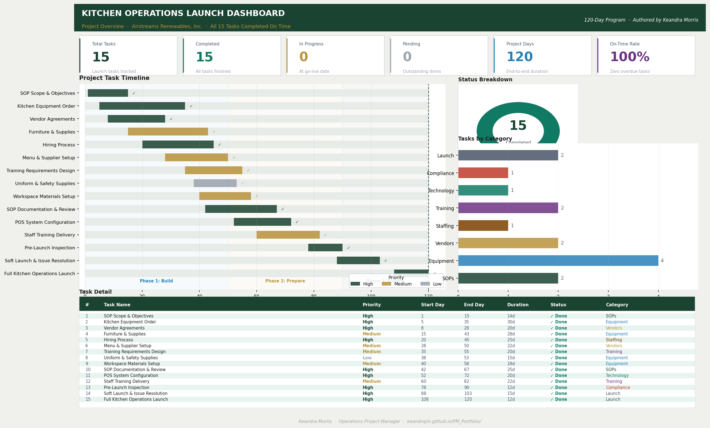

Launch
Build the operating model, workflows, roles, documentation, vendors, and launch timeline.
Operations Project Manager Portfolio
Operations Project Manager | Program Execution | Process Improvement | Digital Systems
I build practical operating systems that help teams launch, scale, and improve complex programs. My work connects budget ownership, SOPs, training, vendor management, compliance, analytics, and digital workflows into execution that holds up in the real world.
This portfolio, including design and development, was fully built and coded by me.
Executive Snapshot
My strongest work happens where operations, people, compliance, and systems meet. I turn moving parts into clear routines, measurable progress, and tools teams can actually use.
Build the operating model, workflows, roles, documentation, vendors, and launch timeline.
Create SOPs, training systems, compliance routines, dashboards, and feedback loops.
Improve throughput, reduce manual work, tighten reporting, and scale repeatable processes.
Flagship Program
A six-year, multi-phase program showing full lifecycle ownership: launch, scale, digitize, train, and optimize.

Led development of the company's first full-service cafeteria program, establishing service workflows, vendor infrastructure, SOPs, compliance controls, training systems, and reporting practices from the ground up.
Managed a $500K annual operating budget while supporting food service operations for 12,000+ veterans and improving consistency through Microsoft Planner, iPad workflows, app-based tracking, and performance review routines.
Established kitchen operations, service model, vendor relationships, production workflows, menus, forms, and foundational policies.
Created onboarding, job roles, training records, SOP-based checklists, and recurring refreshers for quality and compliance.
Built student orientation and employee training videos to standardize knowledge delivery across multiple audiences.
Moved established routines into Microsoft Planner, iPad workflows, and app-based inventory/task tracking.


Developed a Power BI-style dashboard to track the cafeteria launch lifecycle, including task completion, timelines, operational readiness, priority levels, and project outcomes.

Power BI-style dashboard design, Excel tracking, and project timeline data.
Monitored 15 launch tasks from SOP development to inspection readiness.
Tracked launch milestones across a 120-day implementation window.
All project tasks were completed on time, supporting operational readiness.
Developed digital onboarding and training videos to improve accessibility, consistency, repeatability, and self-guided learning for students and employees.
Designed a standardized training system covering food safety, operations, and compliance, delivered through onboarding, SOP-based checklists, and recurring refreshers.
Project Execution
Supporting work that demonstrates crisis response, stakeholder coordination, business ownership, customer experience, and digital systems.
Role: Child and Adult Food Program Specialist
Crystal Stairs needed to monitor newly launched childcare sites under CACFP requirements while responding to COVID-related meal access disruptions.
Supported regulated program execution while helping serve approximately 3,000 children during closures.
Role: Event Operations Lead
Airstreams Renewables needed repeatable event operations for a recurring community fundraiser serving large annual crowds while keeping costs controlled.
Delivered high-volume food service for 200-450 attendees annually over a three-year period.
Role: Founder & Operations Manager
Customers needed practical meal prep support beyond food delivery, including planning tools, education, and a clear digital ordering experience.
Generated $10K in revenue within the first four months through scalable service and digital systems.


Built a customer-facing meal prep and catering platform that combines service operations, digital products, marketing content, customer education, and sales tracking into one scalable business system.


Capabilities
Focused on operations, cross-functional execution, data-informed decisions, training systems, and digital process improvement.
End-to-end execution, stakeholder coordination, planning, implementation, issue tracking, and continuous improvement.
Workflow design, SOPs, inventory controls, vendor management, compliance, procurement, and process optimization.
Excel dashboards, KPI tracking, budget monitoring, sales data, performance insights, and operational reporting.
Microsoft Planner, iPad workflows, POS systems, inventory apps, digital onboarding, training videos, and web tools.
Training program development, onboarding systems, facilitation, team development, performance routines, and coaching.
Website launch, pricing strategy, customer experience, content creation, sales tracking, digital products, and service design.
Python, NumPy, data analysis, data cleaning, statistical analysis, KPI tracking, and reporting.
Microsoft Excel, dashboard development, data visualization, and performance reporting.
HTML5, CSS3, responsive design, GitHub Pages, and portfolio development.
Microsoft Office Suite, Visual Studio Code, Visual Studio, JupyterLab, GitHub, Canva, and Chrome DevTools.
Process automation, workflow optimization, inventory and tracking systems, and process improvement.
Computer architecture, Assembly/MASM basics, debugging, and troubleshooting.
Delivery Playbook
A practical project approach built around clarity, accountability, adoption, and measurable improvement.
Clarify scope, stakeholders, constraints, handoffs, success metrics, and current-state friction.
Translate requirements into SOPs, task boards, role clarity, dashboards, documentation, and training assets.
Coordinate launch steps, train users, validate readiness, track blockers, and adjust the system quickly.
Review KPIs, feedback, compliance signals, workload, and service quality to keep improving execution.
Tools & Working Style
Profile
Career positioning for operations project management, implementation, and business operations roles.
Results-driven operations project manager with 8+ years of experience building, scaling, and optimizing business systems. Proven background launching programs from the ground up, coordinating cross-functional stakeholders, developing SOPs and training systems, managing vendors and budgets, and implementing data-informed improvements that increase efficiency, reduce manual work, and improve compliance.
Resume & Contact
Phone: 661-655-1773
Portfolio: keandrajm.github.io/PM_Portfolio/